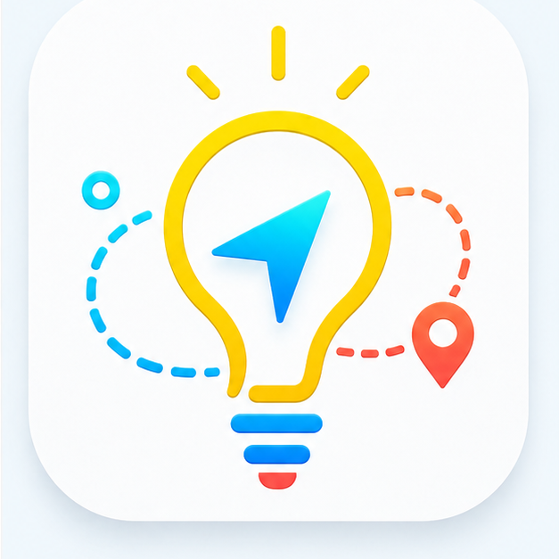
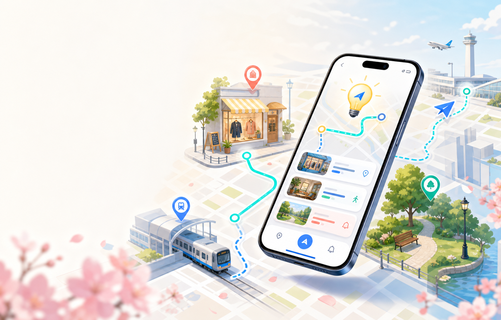

Whimzy.ai
Whimzy.ai 帮你把突然空出来的几个小时，变成一段「不会耽误正事，贴合个人兴趣」的城市微行程。不需要提前做攻略，一句话就能开始。
现有工具把任务拆散了，用户真正需要的是「现在怎么安排」
告诉你怎么到，但不管你是否值得顺路去，也不关心你还有多久必须离开。
告诉你哪里评价高，但不帮你守住航班时间，也不考虑路上要花多久。
收藏夹里的攻略写得再好，也不适合「突然空出两小时」的临时起意。
「现在可以去哪、能停多久、什么时候必须走」——一个能直接执行的答案。
看看在东京涩谷，临时想逛中古店，Whimzy 怎么帮你规划
如果第二站逛久了，Whimzy 会把 Archive Store 备选先放下，直接提醒你去车站。
逛完再问你要不要记住：设计师中古、denim、街头感二手。
从临时起意到安心出发，只需要五步
像跟朋友说话一样说出念头，不需要提前做攻略
识别兴趣、地点、剩余时间和必须抵达的终点
给出去哪、停多久、什么时候离开，并结合时间补充必要事件
继续逛、跳过下一站、现在该走了——轻提醒不打扰
行程结束后，先问用户哪些偏好值得留下
你的时间安排和隐私，Whimzy 认真对待
营业时间、路上耗时、停留窗口和缓冲时间，都交给确定规则核一遍。
开始逛才开启定位，结束就停止。不会后台一直跑。
逛完后再总结可能偏好，留不留下由你决定，不是默认全记。
Sponsored 内容必须明确标注，不能影响航班、会议等硬截止。
对用户、商户和城市，都有真实的价值
减少临时搜索和路线焦虑，把碎片时间变成真实体验。持续使用会更明确你的兴趣偏好。
为中古店、咖啡店、书店、展览、街区带来更精准的到店流量，让小店被真正感兴趣的人发现。
可与酒店、机场、车站、商圈、旅游局合作，提供「周边 90 分钟探索」的轻服务。